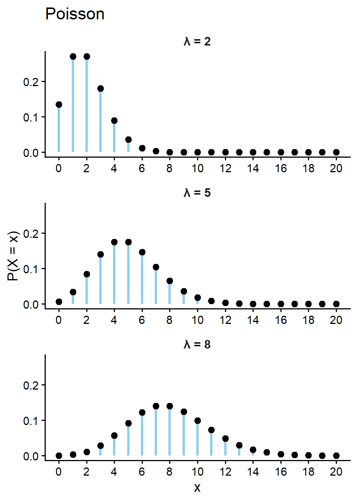
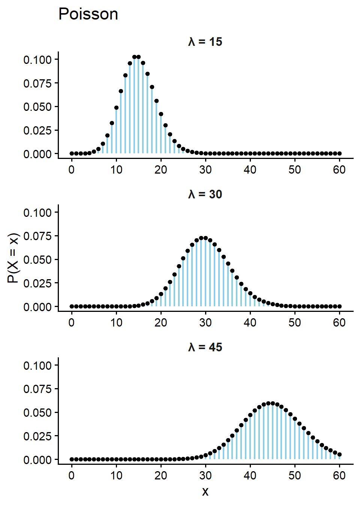
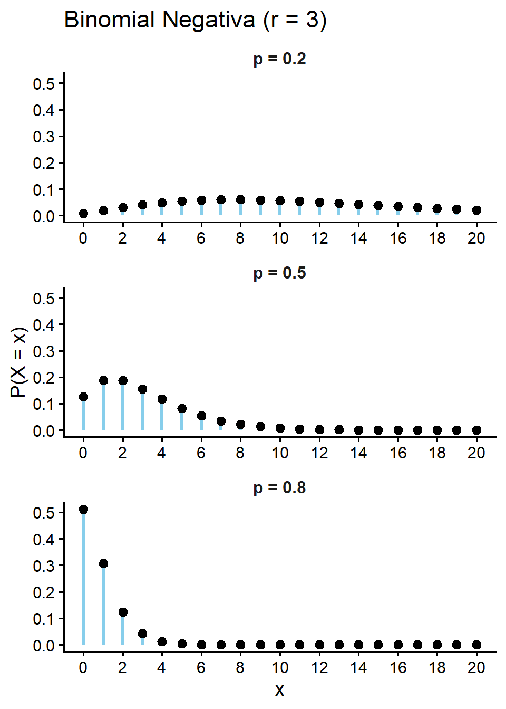
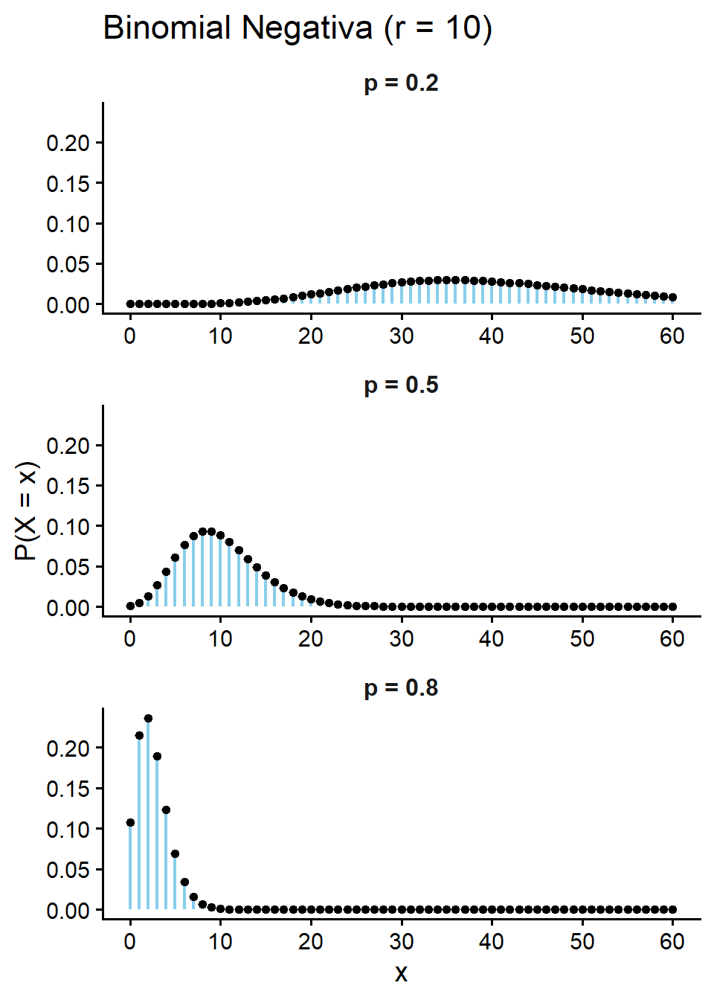

[XS-1130 Principios de Inferencia]
Modela el número de eventos que ocurren en un intervalo fijo de tiempo o espacio, cuando dichos eventos suceden a una tasa promedio constante \(\lambda\) y de manera independiente entre sí.
Es el límite de la distribución Binomial cuando \(n \to \infty\), \(p \to 0\), manteniendo \(np = \lambda\) constante (eventos “raros” en muchas oportunidades).
Aplicaciones: Llamadas recibidas en un call center, defectos por unidad de área, arribos a una fila de espera, accidentes de tránsito por día.
Ejemplo:
En una reserva biológica se registra, en promedio, la aparición de 5 colonias de un hongo específico por cada hectárea. Si se inspecciona una hectárea al azar, ¿cuál es la probabilidad de encontrar 3 colonias de este hongo o más?
Un sitio web recibe en promedio 2 visitas por minuto. ¿Cuál es la probabilidad de que en un minuto dado se registren exactamente 3 visitas?
Función de probabilidad:
\[\Large P(X = x) = \begin{cases} \dfrac{e^{-\lambda}\lambda^x}{x!}, \quad x = 0,1,2,\dots \\ \\ 0 \quad \text{en otro caso} \end{cases}\]
Esperanza:\(\quad E[X] = \lambda\)
Varianza: \(\quad \operatorname{Var}(X) = \lambda\)
Nota: en la Poisson la media y la varianza coinciden (equidispersión). Esta propiedad es justamente lo que la distingue de la Binomial Negativa, que se usa cuando los datos presentan sobredispersión (\(\operatorname{Var}(X) > E[X]\)).


Ejemplo: En una reserva biológica se registra, en promedio, la aparición de 5 colonias de un hongo específico por cada hectárea. Si se inspecciona una hectárea al azar, ¿cuál es la probabilidad de encontrar 3 colonias de este hongo o más?
Solución: Note que \(\lambda = 5\)
\(P(X \ge 3) = P(X=3) + P(X=4)+\cdots \cdots+ P(X=\infty)\)
\(\small \text{Realizar este cálculo a mano es poco realista.}\)
\(P(X \ge 3) = 1- P(X<3) \quad \small \text{Def de Complemento}\)
\(P(X \ge 3) = 1- \left[ P(X=0) + P(X=1) + P(X=2)\right]\)
\(P(X \ge 3) = 1- \left[ \dfrac{e^{-5}5^0}{0!} + \dfrac{e^{-5}5^1}{1!} + \dfrac{e^{-5}5^2}{2!}\right] \approx 0.8753\)
Solución en R:
\(P(X \ge 3) = 1- \left[ P(X=0) + P(X=1) + P(X=2)\right]\)
Importante
dpois(x, lambda): calcula la probabilidad exacta \(P(X=x)\) que la variable tome el valor “x”.
ppois(q, lambda): calcula la probabilidad acumulada \(P(X \le q)\) hasta el valor “q”.
Ejemplo: Un sitio web recibe en promedio 2 visitas por minuto. ¿Cuál es la probabilidad de que en un minuto dado se registren exactamente 3 visitas?
Solución: Note que \(\lambda = 2\)
\(P(X = 3) = \dfrac{e^{-2}2^3}{3!} \approx 0.1804\)
Solución en R:
Como se desea la probabilidad exacta usamos la función dpois(x, lambda).
\[E(X) = \lambda = 2 \text{ visitas}\]
Ejemplo: Un sitio web recibe en promedio 2 visitas por minuto.
A - ¿Cuál es la probabilidad de que en una hora dada se registren exactamente 110 visitas?
B - ¿Cuál es la probabilidad de se registren entre 90 y 130 visitas (ambos inclusive)?
Solución: Note que \(\lambda_{HORA} \approx 60\cdot\lambda_{MINUTO} = 120\)
A) \(P(X=110)\)
B) \(P(90 \le X\le 130)\)
Modela el número de fracasos que ocurren antes de lograr un número fijo \(r\) de éxitos, en una secuencia de ensayos de Bernoulli independientes con una probabilidad de éxito constante \(p\).
Aplicaciones: Número de intentos de venta hasta lograr \(r\) cierres, inspección secuencial hasta hallar \(r\) defectos, conteos con sobredispersión en biología y seguros.
Ejemplo:
En un proceso de control de calidad, la probabilidad de que una pieza sea defectuosa es 0.1. Si se inspeccionan las piezas una por una, ¿cuál es la probabilidad de hallar exactamente 5 piezas buenas antes de encontrar la segunda pieza defectuosa?
Una vendedora de seguros logra cerrar una venta con probabilidad 0.3 en cada visita a un cliente potencial. ¿Cuál es la probabilidad de que necesite a lo sumo 3 visitas fallidas para lograr su segunda venta?
Función de probabilidad:
\[ \Large P(X = x) = \begin{cases} \binom{x+r-1}{x} p^r (1-p)^{x}, \quad x = r,r+1,r+2,\dots \\ \\ 0 \quad \text{en otro caso} \end{cases} \]
Donde \(X\) = número de fracasos antes de lograr el \(r\)-ésimo éxito.
Esperanza:\(\quad E[X] = r\dfrac{1-p}{p}\)
Varianza:\(\quad \operatorname{Var}(X) = r\dfrac{1-p}{p^2}\)
Nota: como \(\operatorname{Var}(X)/E[X] = 1/p > 1\), la Binomial Negativa siempre presenta sobredispersión (\(\operatorname{Var}(X) > E[X]\)), a diferencia de la Poisson donde ambas son iguales.


Ejemplo: En un proceso de control de calidad, la probabilidad de que una pieza sea defectuosa es 0.1. Si se inspeccionan las piezas una por una, ¿cuál es la probabilidad de hallar exactamente 5 piezas buenas antes de encontrar la segunda pieza defectuosa? (En este ejemplo mi éxito es la pieza defectuosa).
Solución: Note que \(r = 2 \text{ , } p = 0.1 \text{ , } x = 5\)
\(\small P(X = 5) = \binom{5+2-1}{5} (0.1)^2 (0.9)^{5} = \binom{6}{5}(0.1)^2(0.9)^5 \approx 0.0354\)
Solución en R:
Importante
1 - dnbinom(x, size, prob): calcula la probabilidad exacta \(P(X=x)\) que la variable tome el valor “x”.
2 - pnbinom(q, size, prob): calcula la probabilidad acumulada \(P(X \le q)\) hasta el valor “q”.
!!En R los argumentos son: x = # de fracasos, size = r (# éxitos deseados), prob = p (probabilidad de éxito por ensayo). No confundir size con el size de dbinom: allí era el número total de ensayos \(n\); aquí es el número de éxitos \(r\) que se busca alcanzar. !!
Ejemplo: Una vendedora de seguros logra cerrar una venta con probabilidad 0.3 en cada visita a un cliente potencial. ¿Cuál es la probabilidad de que necesite a lo sumo 3 visitas fallidas para lograr su segunda venta (éxito)?
Solución: Note que \(r = 2 \text{ , } p = 0.3\)
\(P(X \leq 3) = P(X=0) + P(X=1) + P(X=2) + P(X=3)\)
\(P(X \le 3) = \binom{1}{0}(0.3)^2(0.7)^0 +\binom{2}{1}(0.3)^2(0.7)^1 + \binom{3}{2}(0.3)^2(0.7)^2 + \binom{3}{3}(0.3)^2(0.7)^3\)
\(P(X \le 3) \approx 0.09 + 0.126 + 0.1323 + 0.1235 \approx 0.4718\)
Solución en R:
En una intersección vial con alto tránsito, el departamento de ingeniería vial ha determinado que se registran, en promedio, 2.5 colisiones vehiculares por semana. Asuma que la tasa de ocurrencia se mantiene constante. Determine la probabilidad de que:
Un jugador de tenis se encuentra en la cancha practicando sus primeros saques. Por su nivel técnico, la probabilidad de que logre un “ace” (saque directo sin que el oponente pueda responder) en cada intento es de 0.22. El jugador decide que no terminará su entrenamiento hasta que haya conseguido su quinto “ace”. Determine la probabilidad de que el número de saques que no resultan en “ace” antes de irse a casa sea:
Un biólogo forestal realiza un muestreo en un bosque tropical buscando individuos de una especie arbórea amenazada. La probabilidad de que un árbol seleccionado al azar pertenezca a esta especie específica es de 0.18. El muestreo concluye en el momento en que se registran 6 árboles de la especie objetivo. Determine la probabilidad de que el número de árboles de otras especies evaluados antes de detenerse sea:
En la manufactura de rollos de tela industrial, el control de calidad indica que se presentan, en promedio, 1.2 defectos de hilado por cada 10 metros cuadrados de material. Si se cortan diferentes secciones de tela para inspección, ¿cuál es la probabilidad de encontrar:
Un técnico de control de calidad revisa laptops de un mismo lote, una por una; la probabilidad de que una laptop tenga un defecto de fábrica en la batería es 0.08. El técnico continúa revisando hasta encontrar exactamente 2 laptops defectuosas.
Un biólogo captura peces uno por uno en un estanque de investigación; la probabilidad de que un pez capturado pertenezca a una especie protegida es 0.25. El biólogo continúa capturando peces hasta registrar 3 peces de la especie protegida.
Un centro de atención al cliente recibe en promedio 5.4 llamadas por hora relacionadas con reclamos técnicos. Se registra el número de llamadas de este tipo en una hora seleccionada al azar.
Un proveedor externo entrega componentes a una fábrica; la probabilidad de que un componente entregado sea defectuoso es 0.2. Un auditor revisa los componentes en el orden en que llegan hasta encontrar exactamente 4 defectuosos.
En un invernadero se detectan en promedio 1.2 semillas no germinadas por cada bandeja de 50 semillas plantadas. Se registra el número de semillas no germinadas en una bandeja seleccionada al azar.
Un coordinador de un grupo de rescate llama a voluntarios uno por uno para formar un equipo de emergencia; la probabilidad de que un voluntario contactado tenga certificación médica avanzada es 0.4. El coordinador continúa llamando hasta reclutar exactamente 3 voluntarios con certificación médica.
En la revisión editorial de un manuscrito de estadística, se detectan errores tipográficos, de formato o de notación a una tasa promedio de 1.5 errores por página. Suponga que la distribución de los errores es aleatoria y uniforme a lo largo del documento. ¿Cuál es la probabilidad de que se encuentren: